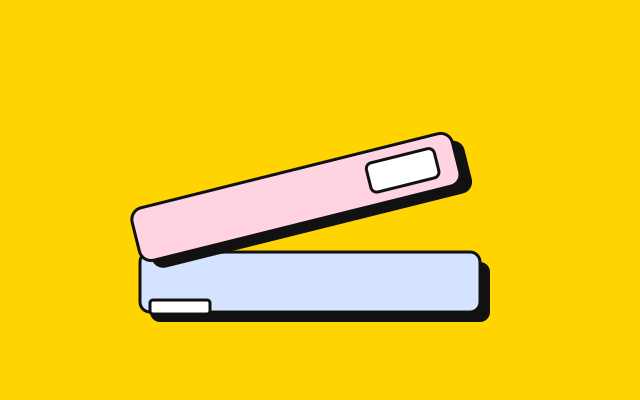
Two stylesheets
theme.css holds the tokens and the palette; global.css holds every rule that uses them. Nothing else to load but one font.
Every box has a black outline and sits on a solid shadow. Press a button, a thumbnail or a text field and it drops into the page; let go and it pops back. Yellow carries the important things, two pastels carry the rest, and after dark the outlines turn off-white.

Buttons come in three kinds and three sizes. Hover one and it lifts; press and hold and the shadow collapses to nothing. The flat variant, thick-flat, has no shadow and is for rows of many small actions. A switch is a checkbox with role="switch"; badges carry a state, and a badge with thick-sticker is tilted and pinned.
An ordinary card is white on the large shadow. Add thick-yellow, thick-pink or thick-blue and the whole card is tinted. Yellow always carries black text, in both halves; the pastels keep the page text and go dusky after dark so it still reads.

theme.css holds the tokens and the palette; global.css holds every rule that uses them. Nothing else to load but one font.
Every colour is a light-dark() pair. The toggle in the corner cycles auto, light and dark, and remembers the choice. The yellow does not change; the outlines do.
The palette block in theme.css pastes straight into a retoken site. See the tokens.
Horizontal cards put the media on the left or, with card-media-end, on the right. On a narrow screen they stack.

The image takes a little over a third of the width, behind its own outline, and the text takes the rest.
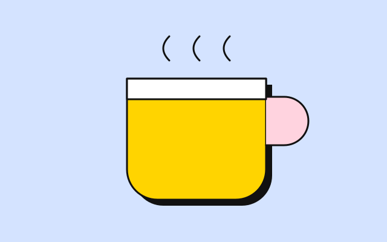
The same card with the order flipped. The markup is the same; only one class differs.
Every template has one feature card with an effect of its own. Thick's is the press at full size: hover and the card lifts off the page, press and it goes flat.
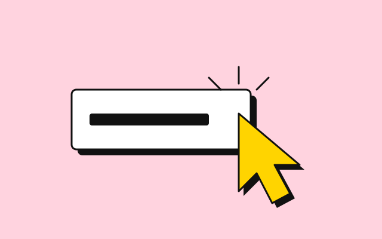
The lift and the press are two transitions on transform and box-shadow, nothing more. Focus inside the card lifts it too, so a keyboard gets the same feedback.
The fifty-fifty block gives an image half the width and the text the other half. Add fifty-fifty-reverse and the image moves to the right; add a colour class and the text half is tinted. On a phone the image comes first either way.
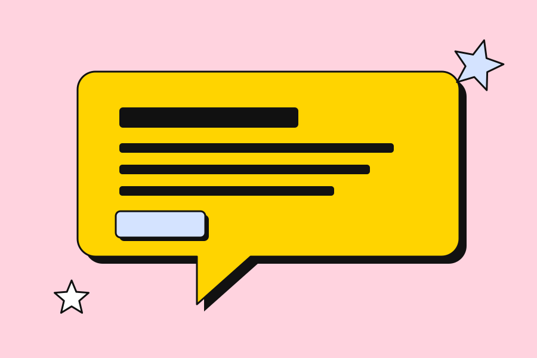
Image left
A heading, a paragraph and a single button. That is the whole pattern, and it carries most shop fronts.
How it is built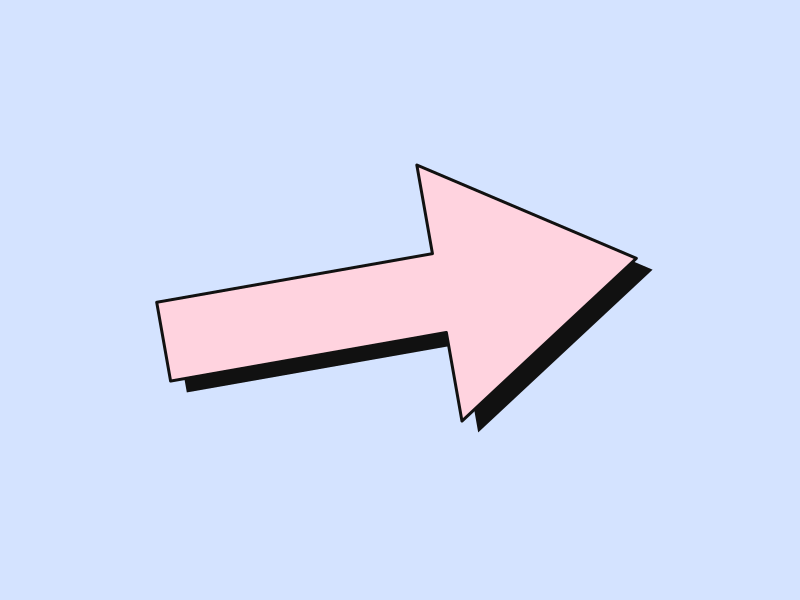
Image right, pink
Yellow on white cannot carry a link, so in the light half the accent is the ink and the yellow is a surface that always holds black text. After dark the accent is the yellow itself.
See the tokensEight stickers from the example shop. Thumbnails are pressable, so they sit on the small shadow and move. Click one and the lightbox opens; the arrows are plain links, the close button is a form, and Esc closes it.
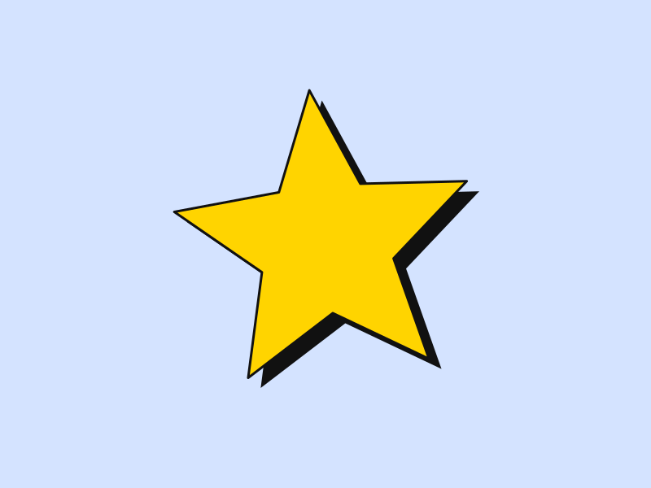
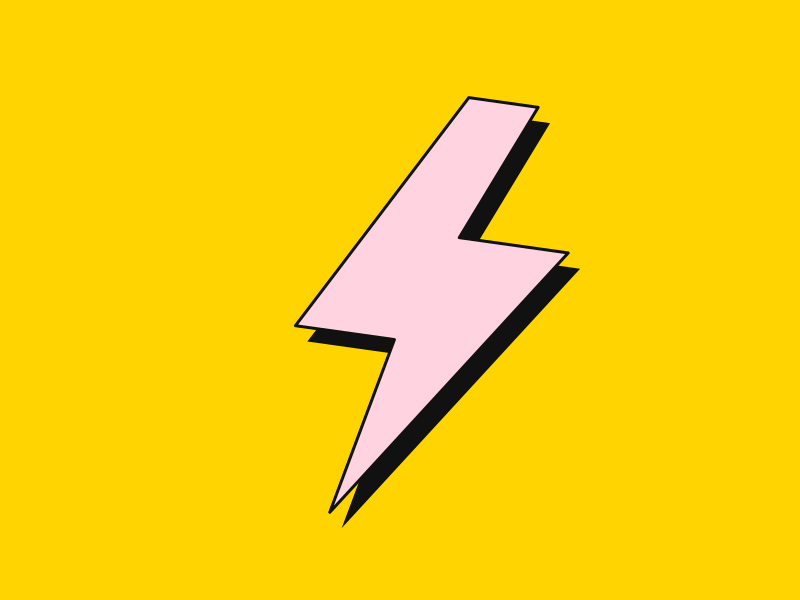
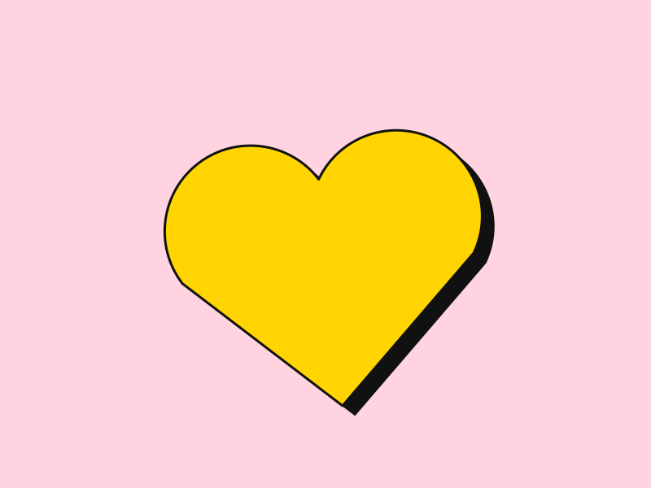
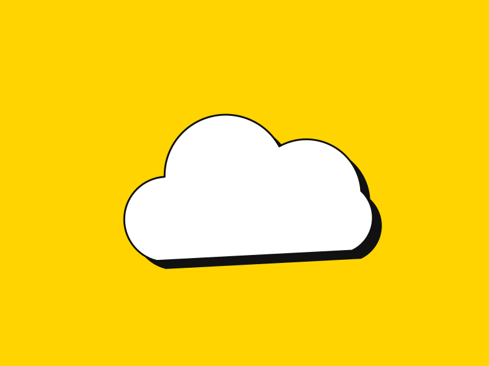
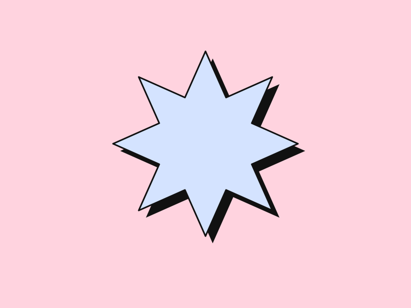
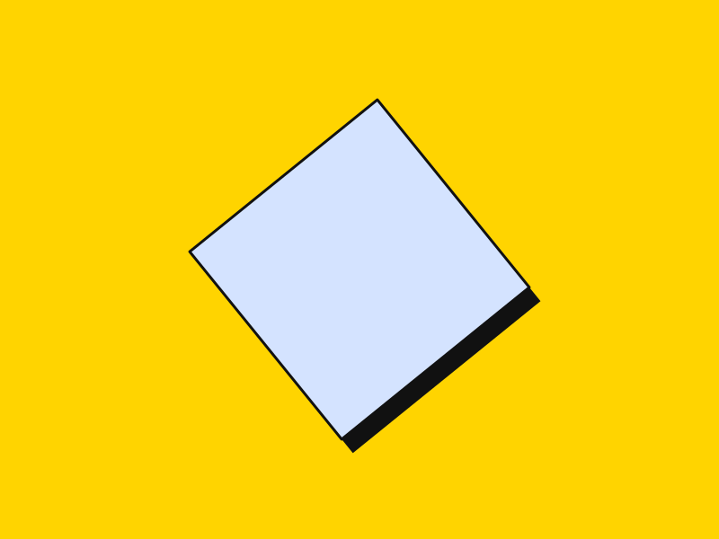
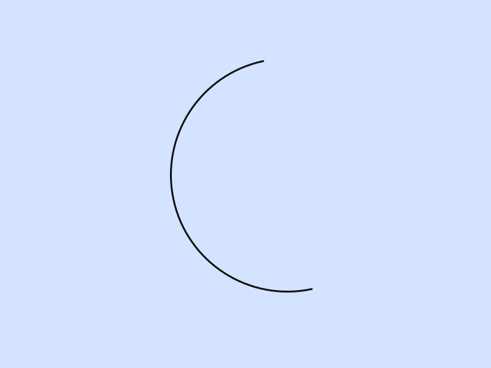
Accordions are native <details> elements. Give a group the same name and opening one closes the others, with no script. The open one turns yellow and its plus turns into a cross.
No. Copy the folder, link the two stylesheets and the one script, and write HTML.
Yes. --thick-yellow is one literal, #ffd400, with black text on it in both halves. What changes after dark is the page, which goes near-black, and the outlines, which go off-white.
About forty lines for the scheme toggle, and a one-line onclick on anything that opens a dialog. The press, the lift and the sticker are CSS.
A single accordion stands on its own.
css/, js/theme.js, assets/ and this folder's README.md. There is no fonts/ folder unless you self-host Rubik.
Tables sit inside an outlined wrapper that scrolls sideways when they are wider than the page. The header row is yellow.
| Component | Element | Script | Docs |
|---|---|---|---|
| Accordion | <details> | none | accordion |
| Lightbox | <dialog> | one line | gallery |
| Navbar menu | popover | none | navbar |
| Switch | <input> | none | switch |
| Scheme toggle | <button> | theme.js | theme |
Dialogs are native too. The button below opens one; the page behind it goes yellow, and the dialog closes itself through a form.
Four kinds of notice. Each has a small ink square with a mark in it and a soft tint of its colour behind the text.
Take the colours with you
Nineteen slots, each a light and dark pair, in one block. The theme page prints it with a copy button and the one line that turns it on.
Copy the paletteProse is what most pages are made of, so .prose styles every construct a markdown renderer produces: headings, lists, quotes, code, tables, footnotes. Headings are Rubik at its heaviest weight; body text is the same face at regular, so the page never changes voice. Plain links light up yellow when you hover them, like a highlighter. The blog post runs the full test document through these rules; defaults shows every bare element.
A template is a promise about what markup will look like. The contract is that promise written down.